Summary
- Theory
- Overview
- Fitting a temporal hypervolume
- Choosing a method
- Tuning hypervolume parameters
- E-space performance
- Volume and overlap diagnostics
- Projecting predictions
- G-space performance
- Next steps
Theory
TemporalModelR operates across two complementary dimensions to support temporally explicit modeling:
-
E-space- (Environmental Space) represents a location in terms of its environmental conditions, independent of geography. A species’ niche in E-space is its tolerance for a given set of environmental variables. -
G-space- (Geographic Space) represents a location in terms of where it physically sits on the landscape. Every point in G-space has a corresponding location in E-space.
Because environmental conditions change over time, the same point in G-space may move through E-space across years, decades, or seasons. Traditional, temporally-static workflows assume both G-space and E-space to be stable in time. TemporalModelR assumes only that the niche (i.e., the species’ tolerance in E-space) is stable across the study period, while the E-space coordinates of any G-space location may change over time. Species observations are therefore matched to E-space data correct in both space and time, the niche is modeled in time-independent E-space. This is done in the Preprocessing temporally explicit data vignette.
By modeling the niche in time-independent E-space using time-independent training data, we can generate a static prediction of a species’ environmental tolerances. We can then project these static E-space predictions back onto G-space at explicit time periods, resulting in dynamic, temporally-explicit ENM predictions of species distributions.
Overview
build_temporal_hv() constructs one n-dimensional
hypervolume per cross-validation fold as was created during the Preprocessing
temporally explicit data vignette. Each fold’s hypervolume is built
from all data outside the fold and evaluated on the held-out fold. A
hypervolume is a geometric envelope drawn around the presence points in
E-space, and a new point falls inside the envelope (predicted suitable)
or outside it (predicted unsuitable). Projecting the hypervolume onto a
stack of environmental rasters produces a binary suitability surface for
each fold and time step, with no need for a separate thresholding
step.
The hypervolume is the only presence-only model in TemporalModelR. It does not need pseudoabsences or background points, which makes it a good choice when reliable absence data is hard to define or when the species’ detection probability is highly variable in space. The trade-off is that without negative training data, the model has no way to learn that an environmental gradient separates suitable from unsuitable conditions, it can only describe where presences sit in E-space and project that shape onto the landscape. Therefore the typical E-space metrics around specificity, AUC, and TSS are not available; only sensitivity-based metrics are reported. See E-space performance.
This vignette runs the seasonal workflow using the bundled
tmr_partition object, which is the pre-built output of the
partitioning step produced by the Preprocessing
temporally explicit data vignette using the same call patterns shown
there. The dataset itself is described in About
the Example Dataset. Note that no tmr_absences object
is loaded; the hypervolume builder does not accept a
pseudoabsence_result argument. Otherwise, this is the same
dataset as is used in each modeling vignette GLM,
GAM,
Random
Forest or Hypervolume.
The hypervolume package is a hard dependency of
build_temporal_hv() and must be installed before
running:
install.packages("hypervolume")
library(TemporalModelR)
library(terra)
#> terra 1.9.34
data(tmr_partition, package = "TemporalModelR")Fitting a temporal hypervolume
The minimal call needs the partition, a character vector of predictor variable names, and a method. We fit a Gaussian kernel density hypervolume across the three predictors. Unlike other modeling functions presented in this package, hypervolume builder does not require a threshold or pseudoabsences, so neither argument appears in the call.
create_plot = TRUE allows the function to generate
diagnostic pairplots and a combined comparison plot across folds.
hv_out <- build_temporal_hv(
partition_result = tmr_partition,
model_vars = c("elevation", "forest_cover", "prseas"),
method = "gaussian",
hypervolume_params = list(),
output_dir = file.path(tempdir(), "Hypervolume_Models"),
create_plot = TRUE,
verbose = FALSE
)
#>
#> Building tree...
#> done.
#> Ball query...
#>
#> done.
#>
#> Building tree...
#> done.
#> Ball query...
#>
#> done.
#>
#> Building tree...
#> done.
#> Ball query...
#>
#> done.
#>
#> Building tree...
#> done.
#> Ball query...
#>
#> done.
#>
#> Building tree...
#> done.
#> Ball query...
#>
#> done.
#>
#> Building tree...
#> done.
#> Ball query...
#>
#> done.
#>
#> Building tree...
#> done.
#> Ball query...
#>
#> done.
#>
#> Building tree...
#> done.
#> Ball query...
#>
#> done.
#>
#> Building tree...
#> done.
#> Ball query...
#>
#> done.
#>
#> Building tree...
#> done.
#> Ball query...
#>
#> done.
#>
#> Building tree...
#> done.
#> Ball query...
#>
#> done.
#>
#> Building tree...
#> done.
#> Ball query...
#>
#> done.
#> Warning: The package 'alphahull' is needed for contour plotting with contour.type='alphahull'. Please install it to continue.
#>
#> *** Temporarily setting contour.type='kde'.
#> Warning: The package 'alphahull' is needed for contour plotting with contour.type='alphahull'. Please install it to continue.
#>
#> *** Temporarily setting contour.type='kde'.
#> Warning: The package 'alphahull' is needed for contour plotting with contour.type='alphahull'. Please install it to continue.
#>
#> *** Temporarily setting contour.type='kde'.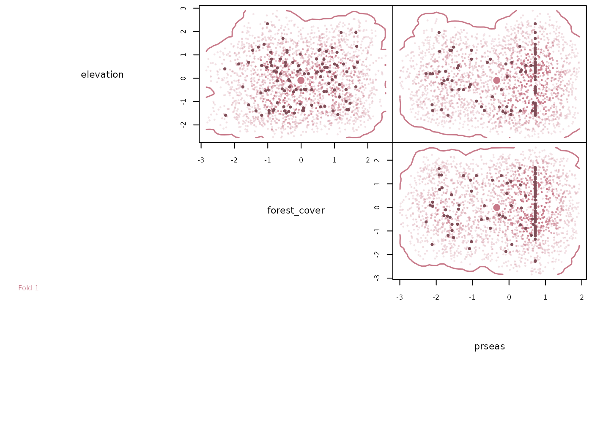
#> Warning: The package 'alphahull' is needed for contour plotting with contour.type='alphahull'. Please install it to continue.
#>
#> *** Temporarily setting contour.type='kde'.
#> Warning: The package 'alphahull' is needed for contour plotting with contour.type='alphahull'. Please install it to continue.
#>
#> *** Temporarily setting contour.type='kde'.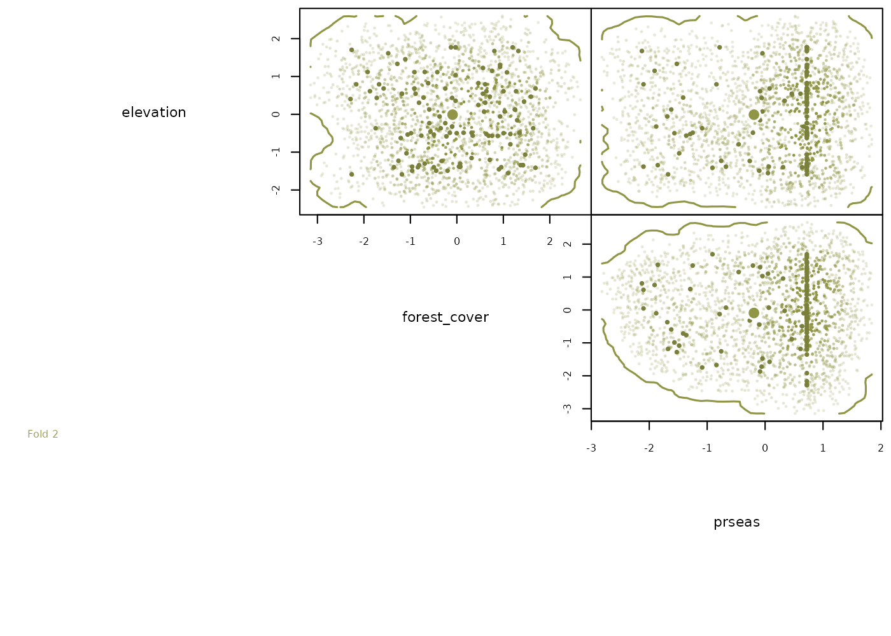
#> Warning: The package 'alphahull' is needed for contour plotting with contour.type='alphahull'. Please install it to continue.
#>
#> *** Temporarily setting contour.type='kde'.
#> Warning: The package 'alphahull' is needed for contour plotting with contour.type='alphahull'. Please install it to continue.
#>
#> *** Temporarily setting contour.type='kde'.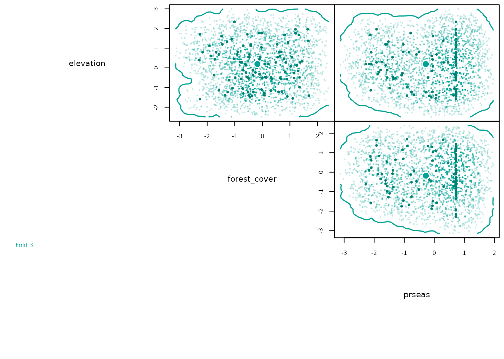
#> Warning: The package 'alphahull' is needed for contour plotting with contour.type='alphahull'. Please install it to continue.
#>
#> *** Temporarily setting contour.type='kde'.
#> Warning: The package 'alphahull' is needed for contour plotting with contour.type='alphahull'. Please install it to continue.
#>
#> *** Temporarily setting contour.type='kde'.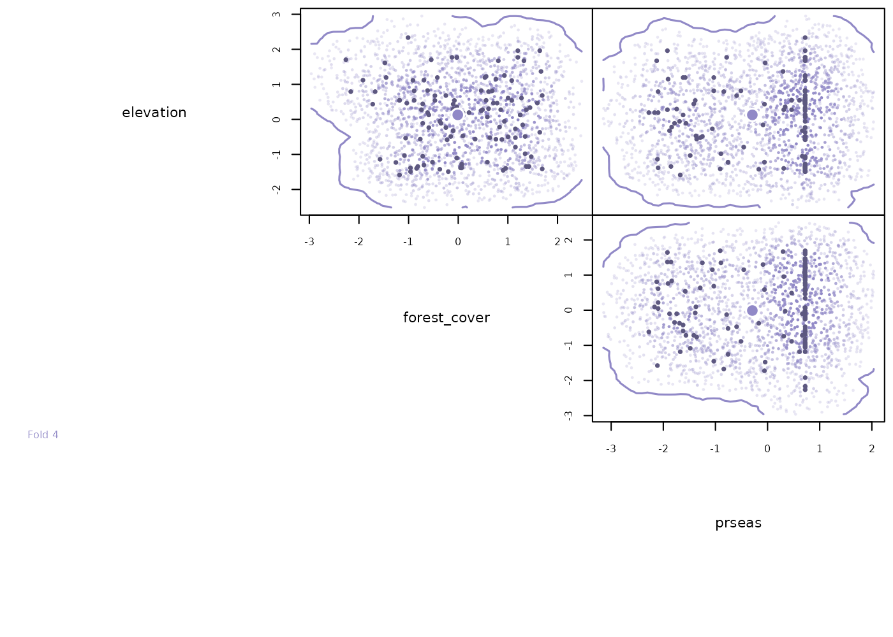
#> Warning: The package 'alphahull' is needed for contour plotting with contour.type='alphahull'. Please install it to continue.
#>
#> *** Temporarily setting contour.type='kde'.
#> Retaining 27285/27285 hypervolume random points for comparison with 37 test points.
#>
#> Building tree...
#> done.
#> Ball query...
#>
#> done.
#> Retaining 27875/27875 hypervolume random points for comparison with 37 test points.
#>
#> Building tree...
#> done.
#> Ball query...
#>
#> done.
#> Retaining 27642/27642 hypervolume random points for comparison with 43 test points.
#>
#> Building tree...
#> done.
#> Ball query...
#>
#> done.
#> Retaining 27741/27741 hypervolume random points for comparison with 33 test points.
#>
#> Building tree...
#> done.
#> Ball query...
#>
#> done.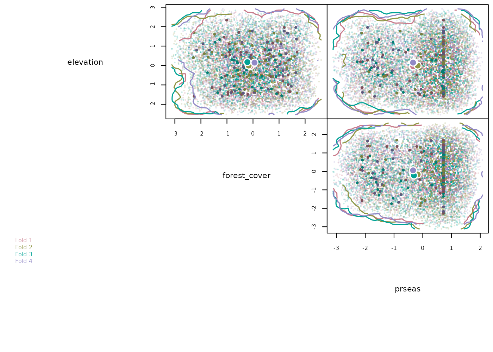
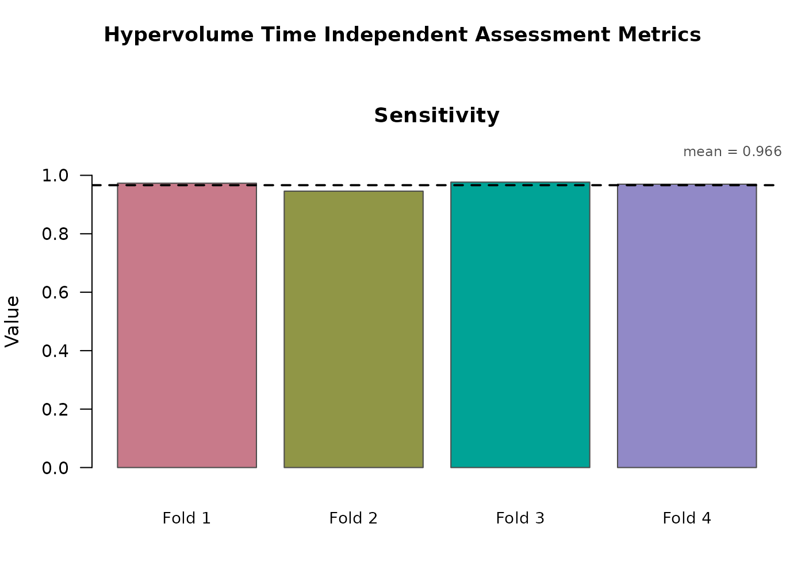
The diagnostic pairplots show the location of presence points and the envelope boundary in each pair of predictor dimensions. These are useful for spotting envelopes that have stretched along one axis due to a few outliers, or that have failed to capture an obvious cluster of presences. Here we see high overlap among all hypervolume folds.
class(hv_out)
#> [1] "TemporalHypervolume" "list"
names(hv_out)
#> [1] "models" "volumes" "overlaps"
#> [4] "method" "model_vars" "fold_training_data"
#> [7] "fold_test_metrics" "output_dir" "model_type"
#> [10] "plots"The returned object is a list of class
"TemporalHypervolume" containing the following objects:
-
$models- named list ofHypervolumeobjects, one per fold (fold1,fold2, …). Each is a standardhypervolume::Hypervolumeobject and accepts the usualhypervolume::get_volume(),hypervolume::hypervolume_inclusion_test(), andhypervolume::hypervolume_project()calls. -
$volumes- named numeric vector of hypervolume sizes (in units of the standardized predictor space), one per fold. See Volume and overlap diagnostics. -
$overlaps- named list of pairwise percent volume overlap statistics between fold hypervolumes. -
$method- the method used ("gaussian"or"svm"). -
$model_vars- character vector of the predictor variable names supplied to the function. Used bygenerate_spatiotemporal_predictions()to know which raster layers to assemble at projection time. -
$fold_training_data- list of the training data frames used for each fold. -
$fold_test_metrics- data frame of per-fold E-space metrics computed on the held-out test set. See E-space performance. -
$output_dir- path to the directory where the saved RDS of fitted hypervolumes and the fold test metrics CSV were written. -
$model_type-"hypervolume", used bygenerate_spatiotemporal_predictions()to choose the correct projection logic. -
$plots- list of recorded base-R plots produced whencreate_plot = TRUE(pairplots and the combined comparison plot).
Unlike GLM/GAM/RF, no thresholds, no
threshold_method, no model_formula or
link. The hypervolume produces a binary inside/outside
classification directly, with no probability scale or threshold to
choose.
Choosing a method
Two methods are supported, set via the method
argument:
-
"gaussian"- fits a Gaussian kernel density estimate around the presence points in E-space and thresholds it at a requested quantile (default 95%) to define the envelope. The resulting shape is smooth and roughly convex in each dimension. Best when presences are reasonably dense and you want a soft, density-based description of niche. -
"svm"- fits a one-class support vector machine. The SVM finds a boundary that separates the presence data from the rest of E-space using the kernel trick, so the envelope can be highly non-convex and follow the data’s geometry tightly. Best when presences are sparse, multi-modal, or arranged in non-elliptical patterns in E-space.
Tuning hypervolume parameters
hypervolume_params is a named list passed to
hypervolume::hypervolume_gaussian() or
hypervolume::hypervolume_svm() depending on
method. Anything that would normally be passed to either
function can go in hypervolume_params. See
?hypervolume::hypervolume_gaussian() or
hypervolume::hypervolume_svm() for the full list.
E-space performance
Each fold’s held-out test set provides a set of presence points the model has never seen based on the folds defined in the Preprocessing temporally explicit data vignette. We check whether each test point falls inside the fold’s hypervolume envelope and count correct vs incorrect classifications. Because the hypervolume is presence-only, only sensitivity-based metrics can be computed, not specificity, AUC, or TSS.
hv_out$fold_test_metrics
#> Fold N_Test E_Volume Testing_TP Testing_FN Sensitivity
#> 1 1 37 83.5427 36 1 0.9730
#> 2 2 37 79.2246 35 2 0.9459
#> 3 3 43 89.4502 42 1 0.9767
#> 4 4 33 87.8619 32 1 0.9697Columns:
-
Fold- fold identifier matching the folds intmr_partition$points_sf$fold. -
N_Test- number of held-out presence test points for that fold. -
E_Volume- size of the fitted hypervolume in standardized E-space units. See Volume and overlap diagnostics. -
Testing_TP- count of test-set presence points correctly classified as inside the envelope (true positives). -
Testing_FN- count of test-set presence points incorrectly classified as outside the envelope (false negatives). -
Sensitivity- proportion of test-set presences correctly classified,Testing_TP / (Testing_TP + Testing_FN). Values close to 1 mean the model rarely misses presences. -
volumes- reports the size of each fold’s hypervolume in standardized E-space units. -
overlaps- reports pairwise percent volume overlap between fold hypervolumes. High pairwise overlap means the niche estimate is stable across spatially or temporally distinct training subsets.
Sensitivity alone is a one-sided picture of performance: a hypervolume that covers the entire study area would have sensitivity 1 but would be ecologically meaningless. Its usually best to examine sensitivity as it relates to the proportion of the study are being predicted as suitable or the cumulative binomial probability of that sensitivity given the cumulative area predicted as suitable over time. See G-space performance.
E-space metrics are robust to imbalanced sample sizes across time, because they pool across the time series. They are a good metric for assessing overall model fit. Time-specific (G-space) metrics can also be assessed later when we project the model to specific G-space and time combinations. In the case of hypervolume modeling, G-space metrics must be used to get a complete picture of the model’s performance, in absence of specificity metrics.
Projecting predictions
generate_spatiotemporal_predictions() projects each
fold’s hypervolume onto a stack of environmental rasters matching each
requested time step, producing one fold-vote raster per time step. The
same call works for all four model types; model_type in the
model object tells the function which projection logic to use. Note that
pseudoabsence_result is omitted from the call below because
the hypervolume workflow does not use pseudoabsences.
For this example we project across all 15 years and 4 seasons, producing 60 prediction layers total, each summarizing votes across the four folds:
scaled_dir <- system.file("extdata/rasters_scaled", package = "TemporalModelR")
time_steps <- expand.grid(
year = 1:15,
season = c("Spring", "Summer", "Autumn", "Winter"),
stringsAsFactors = FALSE
)
preds <- generate_spatiotemporal_predictions(
partition_result = tmr_partition,
model_result = hv_out,
raster_dir = scaled_dir,
variable_patterns = c(
"elevation" = "elevation",
"forest_cover" = "forest_cover_YEAR",
"prseas" = "prseas_YEAR_SEASON"
),
time_cols = c("year", "season"),
time_steps = time_steps,
output_dir = file.path(tempdir(), "HV_Predictions"),
overwrite = TRUE,
verbose = FALSE
)We can now visualize the 60 prediction rasters as a year-by-season grid. Each cell shows the number of folds (0 to 4) that classified that pixel as suitable.
terra::plot() limits each call to 16 layers, so we
render the stack in four blocks of four years each.
pred_stack <- terra::rast(preds$prediction_files)
pred_names <- basename(preds$prediction_files)
pred_seasons <- sub(".*_(Spring|Summer|Autumn|Winter)\\.tif$", "\\1", pred_names)
pred_years <- as.numeric(sub(".*_(\\d+)_(Spring|Summer|Autumn|Winter)\\.tif$",
"\\1", pred_names))
season_levels <- c("Spring", "Summer", "Autumn", "Winter")
stack_order <- order(pred_years, match(pred_seasons, season_levels))
pred_stack <- pred_stack[[stack_order]]
ordered_years <- pred_years[stack_order]
ordered_seasons <- pred_seasons[stack_order]
names(pred_stack) <- paste0("Y", ordered_years, "_", ordered_seasons)
block1 <- which(ordered_years %in% 1:4)
block2 <- which(ordered_years %in% 5:8)
block3 <- which(ordered_years %in% 9:12)
block4 <- which(ordered_years %in% 13:15)
vote_cols <- c("#440154", "#3b528b", "#21918c", "#5ec962", "#fde725")
terra::plot(pred_stack[[block1]], nr = 4, nc = 4,
mar = c(1.0, 1.0, 1.5, 3.0), legend = FALSE,
range = c(0, 4), type = "classes",
levels = 0:4, col = vote_cols)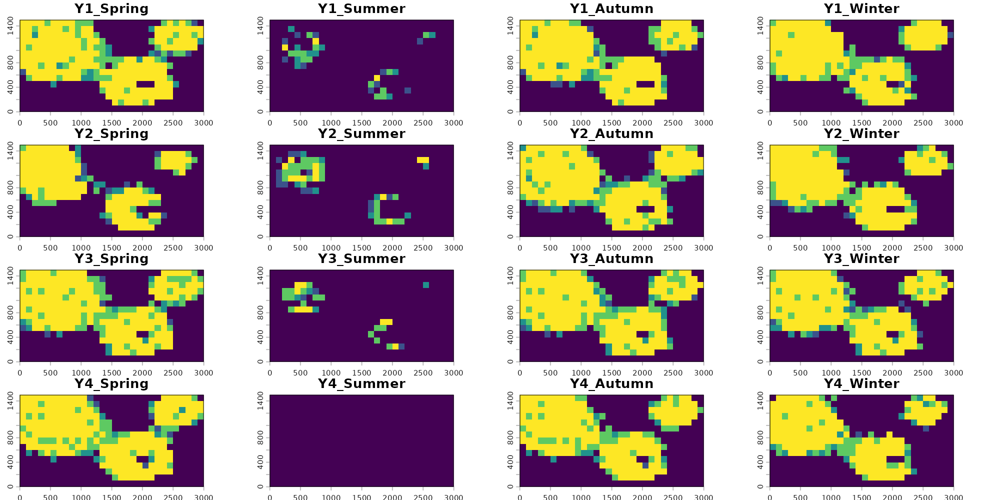
terra::plot(pred_stack[[block2]], nr = 4, nc = 4,
mar = c(1.0, 1.0, 1.5, 3.0), legend = FALSE,
range = c(0, 4), type = "classes",
levels = 0:4, col = vote_cols)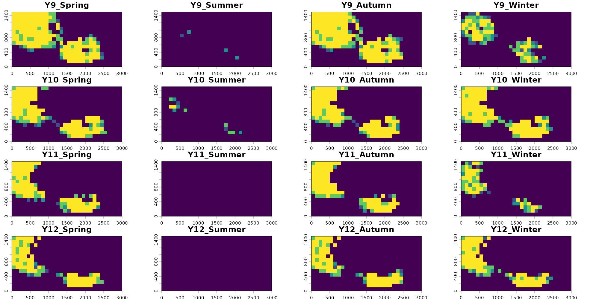
terra::plot(pred_stack[[block3]], nr = 4, nc = 4,
mar = c(1.0, 1.0, 1.5, 3.0), legend = FALSE,
range = c(0, 4), type = "classes",
levels = 0:4, col = vote_cols)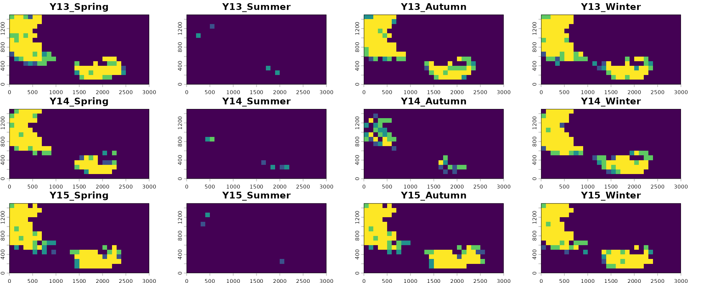
terra::plot(pred_stack[[block4]], nr = 3, nc = 4,
mar = c(1.0, 1.0, 1.5, 3.0), legend = FALSE,
range = c(0, 4), type = "classes",
levels = 0:4, col = vote_cols)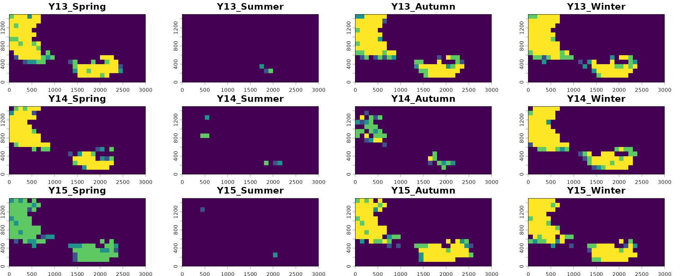
Visualizing our predictions across each season and year, we see that there is generally high agreement among models. These rasters represent consensus votes among each of our four folds, with yellow pixels having strong positive consensus among all folds (all four identify the pixel as suitable) and blue pixels having low consensus among folds (few to no folds identify the given pixel as suitable). We also see that the models correctly visually show one of the main temporal trends in the data: loss of habitat through deforestation starting around year 6.
Unlike predictions from previous model methodologies, hypervolume status as a presence only modeling method means that it is not sensitive to absence data. Instead, it creates predictions exclusively based on the ranges of our input data. As a result, our projections from hypervolume models correctly identify precipitations seasonal role in driving suitability, almost universally identifying no suitability in the dry summer months, and correctly visualizing constrictions in suitability during drought years.
Note that here we show that time_steps can handle making
predictions from compound variables or variables at different temporal
scales so long as their temporal scales are nested. For example here
“elevation” has no temporal value and is considered to be static across
all time steps. “forest_cover” is measured annually, but is considered
to be static across all seasons within a year for the purposes of
predictions. “preseason” is measured both by year and season, so
resulting seasonal predictions reflect that. However if precipitation
was only measured based on aggregate seasons but had no associated year,
predictions would fail. Predictions can also be made where all variables
share the same time step- for example annual forest cover, annual
temperature, and annual precipitation.
Additionally, a plain vector like time_steps = 1:15
produces one prediction per value of the first time column; the other
time columns are filled in with every unique value present in the
occurrence data. So a vector input with
time_cols = c("year", "season") would produce one
prediction per year-season combination observed in the data. A data
frame like the expand.grid() above gives explicit control:
any combination of values can be requested, including ones not present
in the occurrence data, as long as the matching rasters exist (Such as
Summer or Winter predictions).
G-space performance
Once predictions are projected, per-time-step metrics become available. These are computed by overlaying the held-out test points (presences only for the hypervolume workflow) on the prediction raster for each time step they fall in and counting correct vs incorrect classifications.
head(preds$timestep_metrics)
#> Fold Pct_Suitable N_Pres TP FN Sensitivity CBP N_Abs TN FP Specificity
#> 1 1 0.5444 2 2 0 1.0 0.29641975 NA NA NA NA
#> 2 2 0.4689 2 1 1 0.5 0.49806420 NA NA NA NA
#> 3 3 0.5644 5 5 0 1.0 0.05729359 NA NA NA NA
#> 4 4 0.5600 0 NA NA NA NA NA NA NA NA
#> 5 1 0.3622 0 NA NA NA NA NA NA NA NA
#> 6 2 0.3378 2 1 1 0.5 0.44736790 NA NA NA NA
#> TSS year season
#> 1 NA 1 Spring
#> 2 NA 1 Spring
#> 3 NA 1 Spring
#> 4 NA 1 Spring
#> 5 NA 2 Spring
#> 6 NA 2 SpringColumns:
-
Fold- fold identifier; one row per fold per time step. -
Pct_Suitable- proportion of the study area predicted suitable in that time step. -
N_Pres- number of held-out presence test points falling in that time step for that fold. -
TP- true positives, presences correctly classified as suitable in that time step. -
FN- false negatives, presences incorrectly classified as unsuitable in that time step. -
Sensitivity-TP / (TP + FN)for that fold-time step. -
CBP- cumulative binomial probability. Under the null that each test point lands in suitable area at the ratePct_Suitable, this is the probability of observing exactlyTPcorrectly classified points by chance. Small values indicate predictions are better than random. -
yearandseason- the values oftime_colsfor that row, identifying which time step the metrics belong to.
G-space metrics are powerful in time steps with substantial sample
sizes but lose meaning when few records exist (as with out example). A
fold with only one presence in a given year can score sensitivity 0 or 1
with no real information content. Likewise, the ability to earn a
significant G-space CBP score explicitly depends on sample size. Report
E-space (from $fold_test_metrics) and G-space (from
$timestep_metrics) together for a complete view of model
performance.
The overall summary gives a per-fold summary across all time steps:
preds$overall_summary
#> Fold N_Timesteps Mean_Pct_Suitable Total_TP Total_FN Overall_Sensitivity
#> 1 1 60 0.2557 34 3 0.9189
#> 2 2 60 0.2295 33 4 0.8919
#> 3 3 60 0.2672 43 0 1.0000
#> 4 4 60 0.2560 31 2 0.9394
#> Overall_CBP Total_TN Total_FP Overall_Specificity Overall_TSS
#> 1 2.335697e-17 0 0 NA NA
#> 2 1.869632e-17 0 0 NA NA
#> 3 2.265942e-25 0 0 NA NA
#> 4 1.321179e-16 0 0 NA NARapid visual assessment of these metrics can be done using the
function plot_model_assessment() which generates simple
summary plots for each.
plot_model_assessment(
predictions = preds,
time_column = c("year", "season"),
secondary_time_mode = "combine",
model_result = hv_out
)
#> Loaded fold_test_metrics for 4 fold(s).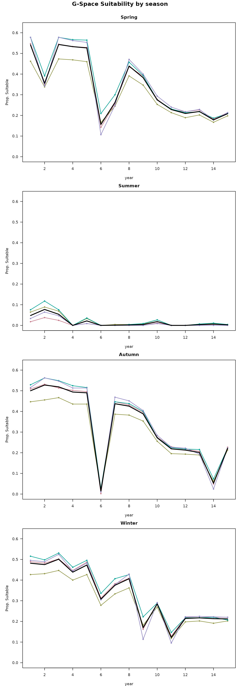
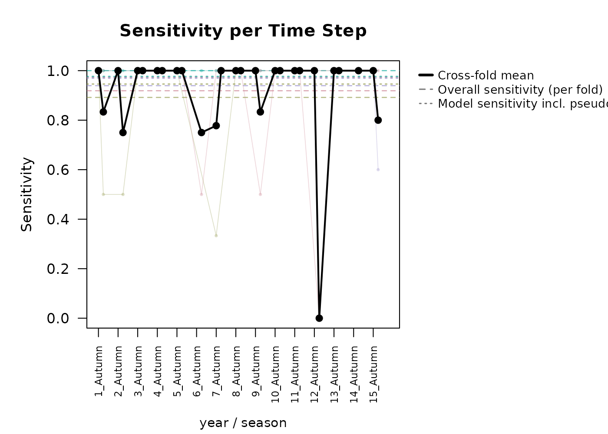
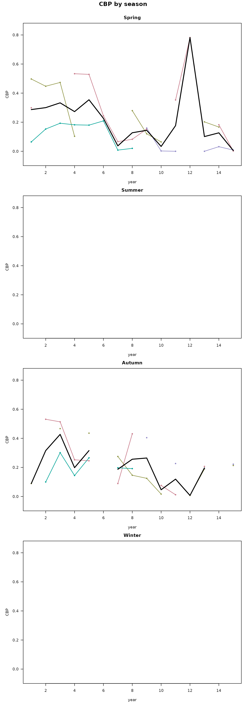
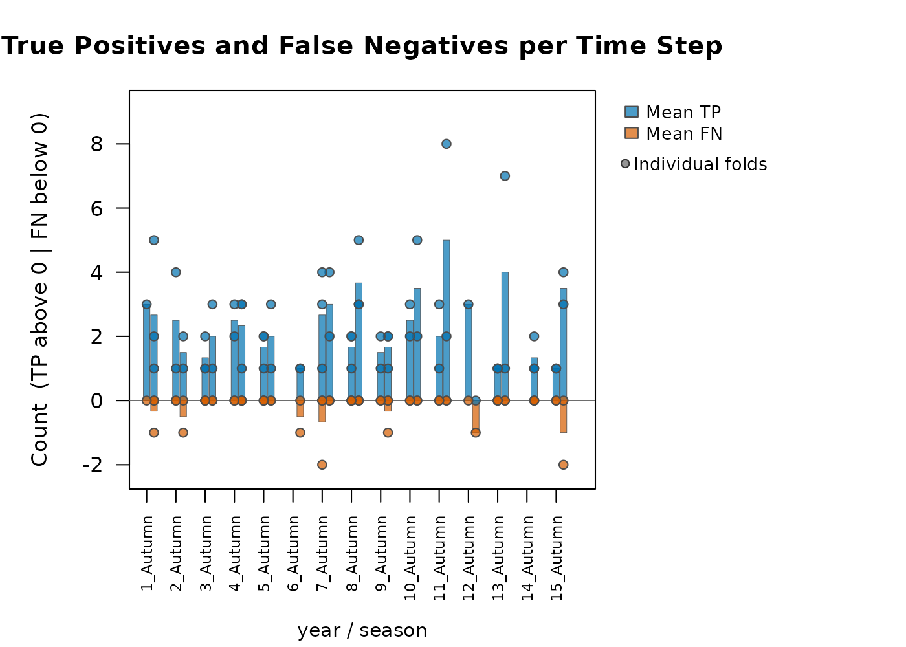
#> Metric Mean SD
#> Pct_Suitable 0.2521 0.1874
#> Sensitivity 0.9354 0.1944
#> CBP < 0.05 (%) 17.5000 NAThis produces per-fold time series of percent suitable, sensitivity,
CBP, and TP/FN. Specificity and TN/FP panels are not produced for
hypervolume predictions because pseudoabsences are not part of the
workflow. When model_result is also supplied, overall
sensitivity from $fold_test_metrics is added as a reference
line. When compound time steps are used (such as year and season), you
must choose how they are visualized. Choosing
secondary_time_mode = "combine" will roll them into one
continuous x axis. secondary_time_mode = "facet" produces
stacked plots as seen below, where the first time_col is
displayed as the x axis, and a different plot is made for each secondary
variable (season here). By default, the threshold for which
CBP is identified as significant is 0.05, but this may also be adjusted
manually.
plot_model_assessment(
predictions = preds,
time_column = c("year", "season"),
secondary_time_mode = "facet",
model_result = hv_out,
cbp_threshold = 0.001
)
#> Loaded fold_test_metrics for 4 fold(s).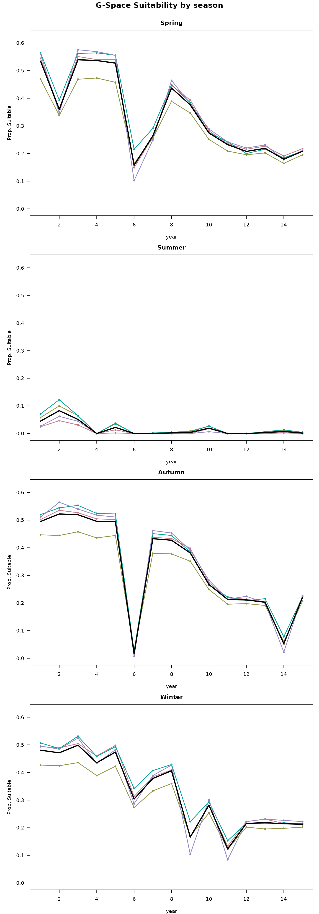
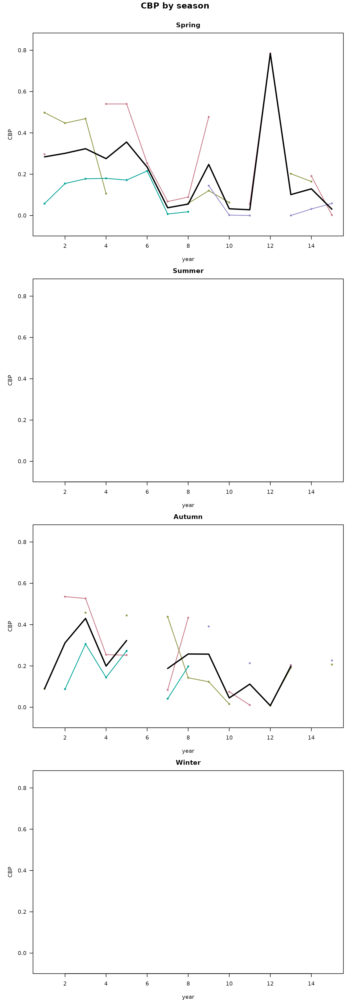
#> Facet mode: produced 3 stacked plot(s) across 4 season value(s).In both visualizations, we can clearly see the constrictions in suitable area during the summer in the G-space predictions per time step graphs.
Next steps
Now that predictions have been generated, you can assess the model and see if it is preforming satisfactory enough for what your goals are. If this is the case, you can preform post-processing analyses to try to gain additional inference about the spatiotemporal patterns of change in the study region See the Post-processing predictions vignette.
For comparison with other algorithms applied to the same dataset:
- Modeling with a GLM - linear and polynomial responses.
- Modeling with a GAM - smooth nonlinear responses.
- Modeling with a Random Forest - flexible ensemble of decision trees.